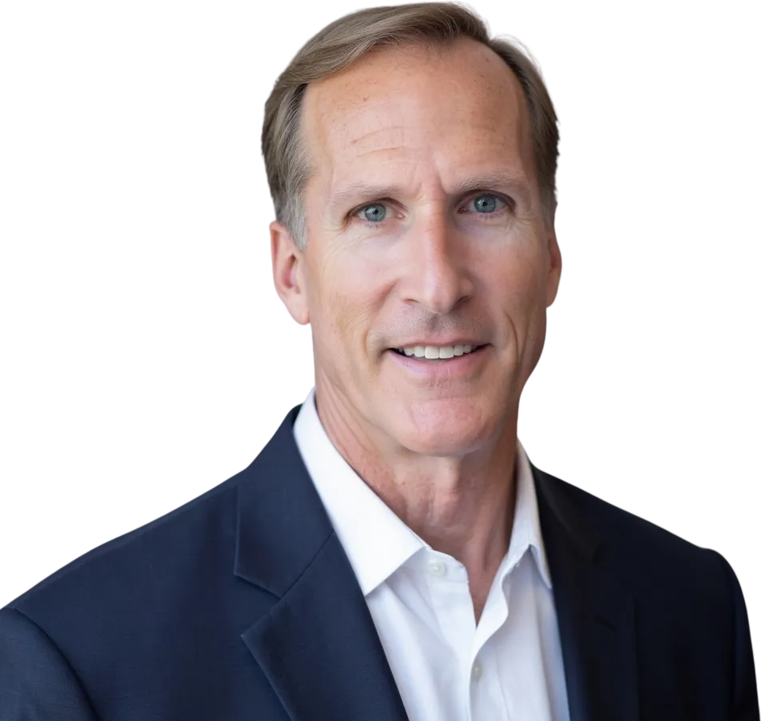

Most founder-led businesses don't plateau because demand dried up — they plateau because the systems, the people, and the accountability structure never scaled with the revenue. I build the operating system, the people strategy, and the AI infrastructure that lets a business grow past the ceiling it's stuck at.
Three forces are converging for founder-led businesses right now: a growth ceiling that shows up right when things start working, AI that genuinely changes what one person can get done in a day, and a scarcity of advisors who bring more than one tool. Here's why that matters for you.
Somewhere between a few million and a few tens of millions in revenue, the systems that got you here stop being enough. The owner who used to know everything can't anymore. Growth doesn't fail because demand disappears — it fails because nobody rebuilt the operating system underneath it.
The businesses winning right now aren't necessarily the ones with more people — they're the ones who turn around quotes, decisions, and follow-up faster than the competition can react. That's a systems and tooling problem, and it's solvable in weeks, not years.
A framework, or a tool, or a recruiter, or a coach. Rarely all of them — and almost never from someone who has actually run a business at this scale, under real stakes, more than once. That's the gap this engagement closes.
Most engagements bring one thing: a framework, or a tool, or a recruiter, or a coach. This one brings all five — in one person, with one bill, inside one coherent system. The EOS operating discipline. The AI intelligence platform. The science of how people are wired. The coaching to develop what you have. The recruiting to find what you're missing. No other advisor brings this combination.
The Entrepreneurial Operating System gives every person in your company a clear role, clear priorities, and a clear way to surface problems before they become crises. It's not advice — it's an operating system built specifically for founder-led businesses that are ready to scale, refined over three decades of actually running one.
Not a subscription to a tool, and not limited to a single platform. AI gets deployed wherever it creates measurable value in your business: a custom-built intelligence system for capturing institutional knowledge, AI-assisted estimating or proposal work, agents that build and maintain SOPs, automated opportunity monitoring, and meeting intelligence that never loses a decision. Where AI doesn't belong — anywhere security, compliance, or trust requires a human — it stays out.
Most hiring mistakes aren't skills failures — they're wiring failures. The person looked right on paper and interviewed well, but they were never built for that role under pressure. Instinctive Drives and Formal Axiology are formal assessment tools — not personality tests — that predict with real accuracy how a person performs, what motivates them, and whether they belong in the seat you're putting them in.
Growth puts pressure on leaders before the organization is ready to absorb it. The person who was exactly right at a smaller scale may need to grow fast to stay effective at the next one — and if they don't, the system breaks at the worst possible moment. Executive coaching accelerates that growth — not through generic leadership content, but through the specific challenges of your business, your people, this season of growth.
"Right people, right seats" is the most important phrase in EOS — and the hardest to execute. Finding people who are genuinely wired for a role (not just credentialed for it) requires a recruiter who understands the job, the culture, and the science behind the hire. Assessment, coaching, and recruiting in one engagement means you're not hiring a stranger and hoping — you're hiring with full visibility before the offer goes out.
The platform below is running right now for an active client. What took months to architect and deploy for them, your team can start using from week one. Click the tabs to see it in practice.
Interactive mockup showing how your data would appear. The underlying system is production-deployed and running today for a live client.

The difference between an advisor who tells you what to do and one who's actually built what you're trying to build isn't style — it's what you're left with when the engagement ends. I build infrastructure: systems, people, and processes that work without me in the room.
I spent six years in the Army after West Point — four as a football coach, two flying helicopters — then ten years helping grow a company from $6M to $25M. For the 25 years since, I've run my own businesses: a manufacturing company, an executive coaching and consulting practice, and The Sterling Group, an executive search firm built on the West Point and Army football network.
I came to the Entrepreneurial Operating System later in my career, but found in it the vocabulary for operating principles I'd already been applying for three decades without a name for them. I'm not positioning myself as a certified implementer — I'm positioning myself as someone who runs businesses by this discipline and applies it seriously to the ones I work with.
Instinctive Drives, Formal Axiology, the coaching practice, the recruiting firm, and the AI systems I build — none of these live in isolation. They reinforce each other, and each one solves the same underlying problem: founder-led businesses that are ready to grow but need the systems, the people, and the tools to hold what's coming.
Thirty minutes. No pitch deck. I'll ask about where growth is stalling, where the systems are thin, and whether what I bring is actually the right fit. If it is, we'll talk about what working together looks like. If it's not, I'll tell you that too.
bob@robertwoodllc.com